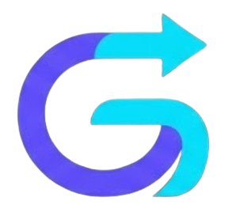

Platform transportasi digital modern yang menghadirkan perjalanan lebih cepat, aman, dan efisien melalui sistem pintar dan pengalaman pengguna premium.
Latar Belakang
Kepadatan lalu lintas perkotaan memicu ketidakpastian waktu perjalanan dan estimasi kedatangan yang tidak akurat pada transportasi konvensional.
Masyarakat modern membutuhkan prediksi cerdas, rute alternatif, dan pemesanan instan yang adaptif — bukan sekadar antar dari A ke B.
Antarmuka futuristik dengan transparansi waktu real-time, mengembalikan kendali penuh atas jadwal harian ke tangan pengguna.
GOFAST menggabungkan teknologi pintar, desain futuristik, dan pengalaman pengguna yang nyaman dalam satu platform transportasi digital modern.

Identitas visual GOFAST membuang klise transportasi konvensional, berlabuh pada abstraksi pergerakan yang mulus, terpadu, dan pasti.

Halaman Mode Cepat dirancang khusus untuk memangkas hambatan dalam proses pemesanan transportasi digital.
Tampilan dengan konsep glassmorphism, smooth gradient, dan visual premium untuk pengalaman futuristik.
Navigasi dan booking lebih cepat, intuitif, dan efisien untuk mobilitas pengguna sehari-hari.
Seluruh proses dari research, persona, user flow, prototype, hingga UI final terdokumentasi lengkap.
Estimasi perjalanan diperbarui secara dinamis sepanjang perjalanan.
Kondisi lalu lintas dan potensi keterlambatan sebelum pemesanan.
Pola perjalanan rutin dikenali otomatis untuk pemesanan lebih cepat.
Saran titik jemput alternatif untuk mengurangi waktu tunggu.
Interaksi penuh dengan antarmuka GOFAST tanpa perlu membuka Figma secara terpisah.
Dari research hingga UI final — semua proses desain GOFAST terdokumentasi lengkap dan bisa diakses langsung.
Analisis mendalam karakteristik, kebiasaan, frustasi, dan kebutuhan calon pengguna sebelum merancang solusi mobilitas digital GOFAST.
 Mahasiswi · 19 Thn
Mahasiswi · 19 Thn
Mahasiswa aktif dengan mobilitas harian tinggi. Mengandalkan ojek daring saat tidak membawa kendaraan pribadi dan mengutamakan efisiensi waktu di setiap perjalanan.
Kebutuhan
Pain Points
UX Opportunity
Alur navigasi intuitif, alokasi cerdas pemesanan, UI bersih tanpa distraksi, poin loyalitas, dan regulasi tegas anti pembatalan sepihak.
 Guru Les · 55 Thn
Guru Les · 55 Thn
Guru les mewarnai dengan mobilitas tinggi berpindah lokasi mengajar. Kurang familiar dengan aplikasi digital, mengandalkan ojek pangkalan konvensional selama ini.
Kebutuhan
Pain Points
UX Opportunity
Mode minimalis ramah lansia, akurasi GPS optimal, transparansi estimasi waktu jemput, dan mitigasi pembatalan untuk menjaga jadwal pengguna.
 Pelajar SMP · 15 Thn
Pelajar SMP · 15 Thn
Siswi SMP aktif antara sekolah dan bimbel. Membutuhkan transportasi gesit menembus kemacetan, khususnya saat tidak ada jemputan keluarga.
Kebutuhan
Pain Points
UX Opportunity
Klaster armada di zona sekolah, stabilisasi tarif komuter pelajar, fitur safety share link, dan kontrol kualitas atribut kendaraan.
Berdasarkan hasil riset Affinity Diagram untuk menyelesaikan hambatan nyata mobilitas, transparansi harga, dan kompleksitas UI/UX transportasi digital.
User kesulitan menggunakan aplikasi rumit dan enggan mempelajari sistem interface yang kompleks.
Sulit dapat driver jam sibuk, pembatalan sepihak tanpa alasan memicu waktu tunggu lama.
Navigasi dan GPS kurang akurat menurunkan kepercayaan user terhadap efisiensi estimasi waktu.
Lonjakan tarif mendadak di jam sibuk atau hujan jadi kendala sensitif bagi stabilitas keuangan user.
Ketergantungan tinggi pada transportasi online untuk mobilitas mendesak menuntut ketepatan waktu mutlak.
Perlu jaminan keamanan perjalanan dan minimnya apresiasi bagi pelanggan setia aplikasi.
Core HMW Question
"How might we memberikan kepastian waktu perjalanan yang akurat agar pengguna dapat merencanakan aktivitasnya tanpa risiko keterlambatan?"
Tampilkan estimasi dalam bentuk rentang untuk meningkatkan akurasi persepsi psikologis.
Info kondisi lalu lintas dan potensi keterlambatan sebelum pemesanan diverifikasi.
Saran titik jemput lebih cepat untuk memangkas waktu tunggu secara signifikan.
Pembaruan estimasi dinamis sesuai pergerakan armada selama perjalanan berlangsung.
Saran berdasarkan histori waktu dan pola aktivitas rutin pengguna secara otomatis.
Pesan dengan sekali klik menggunakan data lokasi dan tujuan tersimpan.
Prioritaskan driver dengan rating tinggi di area dan jam sibuk tinggi.
Indikator jumlah armada aktif di sekitar lokasi pengguna secara real-time.
Distribusi klaster driver khusus di area rawan macet dengan demand tinggi.
Pemetaan fitur berdasarkan tingkat dampak dan beban kerja pengembangan.
Eksplorasi konsep visual kasar melalui sesi brainstorming, dilanjutkan voting internal tim untuk delegasi halaman ke tiap UI/UX Designer.
Logika sistem aplikasi GOFAST dipetakan menyeluruh dari gerbang masuk akun hingga skenario penyelesaian order di lapangan.
Koleksi komprehensif aset visual, komponen interaktif, dan pedoman desain antarmuka yang membangun fondasi ekosistem aplikasi GOFAST.
Platform transportasi digital modern yang menghadirkan perjalanan lebih cepat, aman, dan efisien.
Uji coba mikro-interaksi, transisi animasi smart navigation, dan logika alur pemesanan secara real-time langsung melalui mirror prototype Figma kami.
Coba Prototype SekarangMenguji langsung prototype interaktif GOFAST kepada target pengguna riil untuk mengevaluasi pengalaman navigasi dan fungsionalitas fitur utama.
Mahasiswa · Jarang Aktif Ojek Online
"UI-nya beneran kerasa modern dan clean banget. Sebagai mahasiswa yang sering buru-buru berangkat ke kampus, fitur Mode Cepat ini ngebantu banget karena nggak perlu banyak klik dan mikir buat order driver."